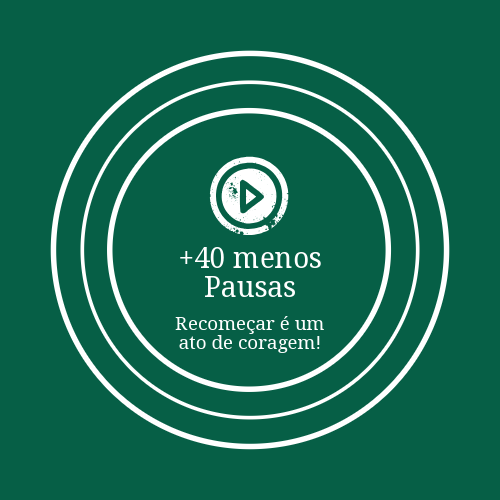

+40 Menos Pausas
Um convite para mulheres maduras que buscam reinvenção, crescimento e um novo florescer.
Conheça Nosso ManifestoPara quem este espaço foi criado?
Este é um refúgio para mulheres que passaram dos 40. Muitas vezes mães, esposas, cuidadoras ou tudo isso ao mesmo tempo, elas deixaram muito de si pelo caminho. Este espaço é um convite para olhar para dentro, reconhecer suas potências e seguir em frente.
Aqui, todas carregam uma força única e um talento especial esperando para ser despertado.
Saiba Mais sobre Nosso PropósitoHomens também fazem parte dessa mudança
Este espaço convida a todos que valorizam a diversidade e o potencial das mulheres 40+ a se tornarem aliados em um mercado mais justo e inclusivo.
Conheça Nossa Visão Inclusiva